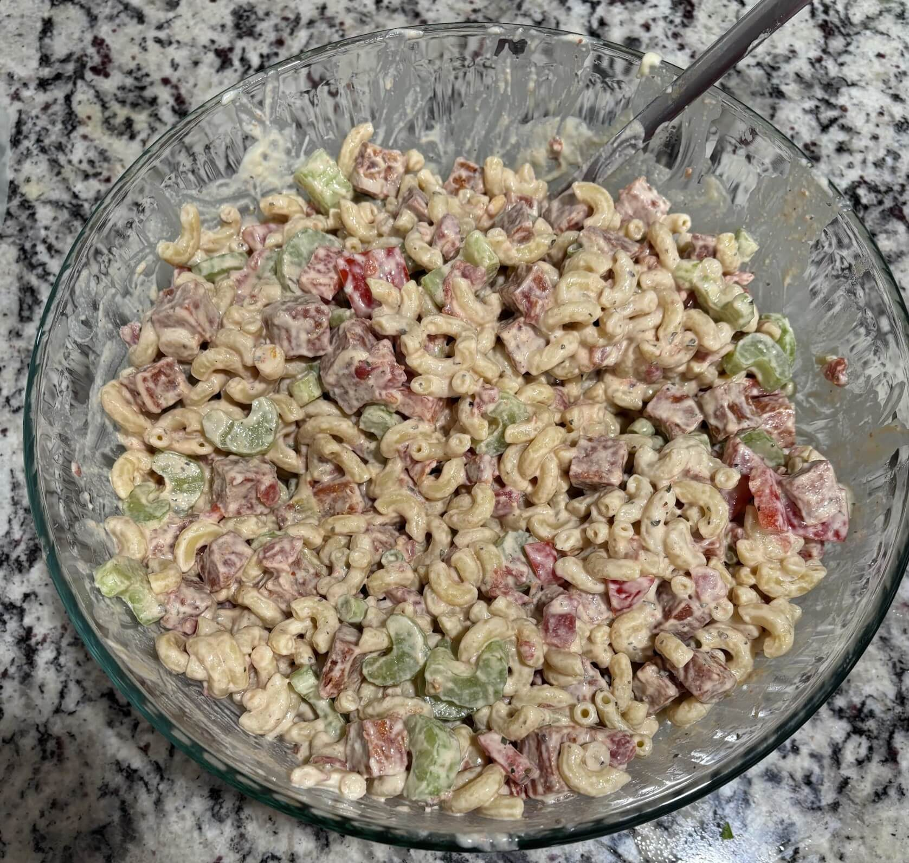

Home
Pasta Salad

Ingredients
For the salad
- 16 oz elbow macaroni
- 1 medium red bell pepper
- 4 stalks chopped celery
- 1/2 cup green onions chopped
- 1/2 cup sun dried tomatoes chopped
- 1/2 cup fresh basil chopped
For the dressing
- 2/3 cups raw cashews (100g) Soaked for 1 hour in hot water
- 1 cup mayo (240g)
- 1 tablespoon white wine vinegar
- 1 tablespoon maple syrup
- 1 tablespoon olive oil
- 1 tablespoon Dijon mustard
- 2 teaspoons dried dill
- 1/2 teaspoon garlic powder
- 1/4 teaspoon cayenne pepper
- 1/4 teaspoon sea salt
- 1/4 teaspoon black pepper
- 2 tablespoons water
Steps
- Place the cashews into a bowl and pour hot water from a kettle over them and then let them sit for an hour then drain them before use
- Cook the macaroni according to package instructions and drain before use
- Chop and prepare veggies
- Add the soaked cashews to blender along with the mayo, white wine vinegar, maple syrup, olive oil, dijon mustard, dried dill, garlic powder, cayenne pepper, sea salt, black pepper, and water
- Blend until smooth
- Add the macaroni to a salad bowl. Top with the chopped veggies and pour over the sauce. Toss it all together until well mixed
- Cover the bowl and place it into the fridge for around 1 hour to chill and for the flavors to blend